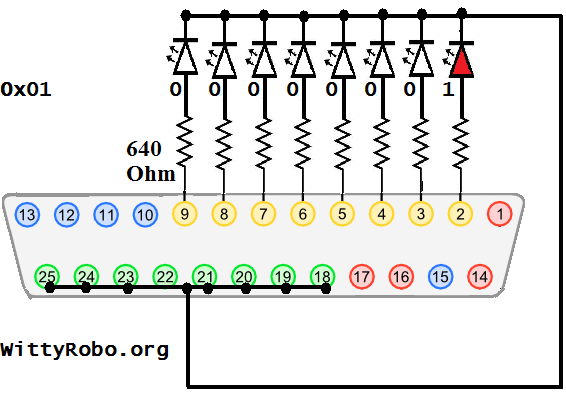
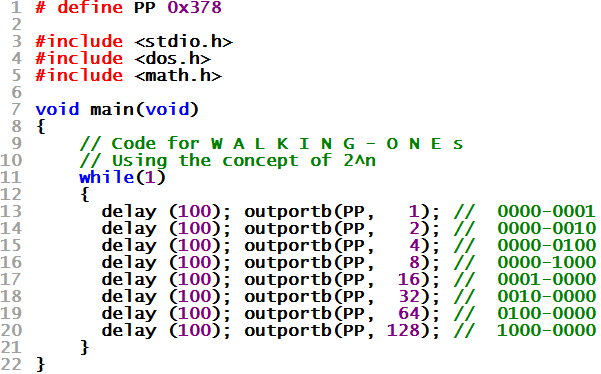

| WR Home Topic Home | Chapter: 1 2 |
| <Previous | Next> |
Chapter 02
Blinking the LEDs in a more controlled way !
Page 1
Program for waliking ones
Just have a look at the binary sequence :
00000001
00000010
00000100
00001000
00010000
00100000
01000000
10000000
It looks like 1 is walking from Right to Left.
If this binary sequence is send to the port, byte by byte, with inter-byte delay, a moving light effect can be observed on the LEDs.

Will you like to try writing some C-code for this ...
ELSE scroll down for solution
Program to generate the Walking ONEs pattern

| WR Home Topic Home | Chapter: 1 2 |
| <Previous | Next> |